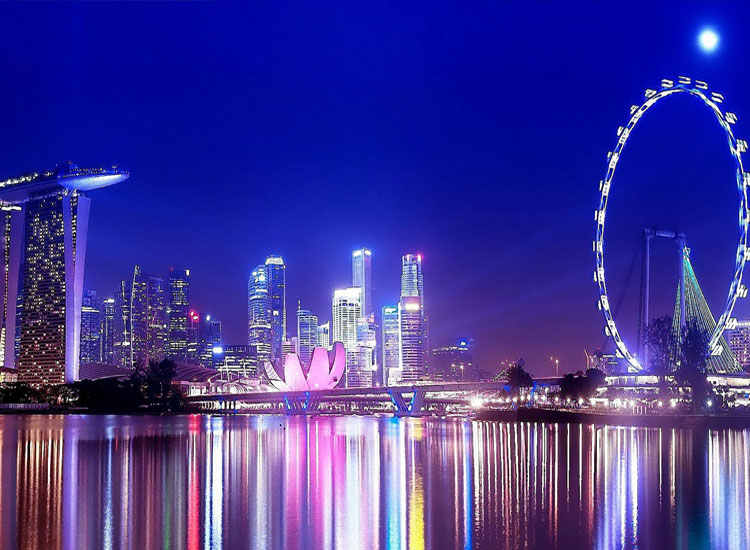
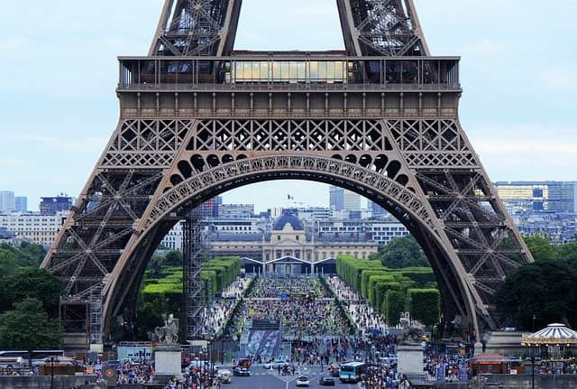
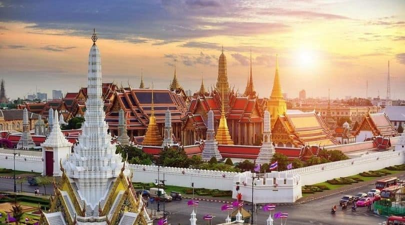
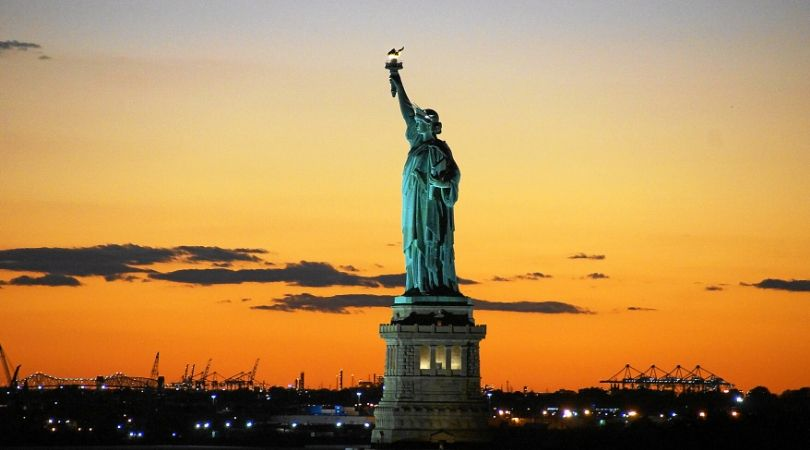

Home
"Explore, Adventure, Discover - Your Dream Getaways Await! Find mesmerizing destinations, adrenaline-pumping activities, and cultural delights. Get expert tips for responsible travel. Start your journey today!"
Destinations
1. Dubai

Tourism is a crucial contributor to Dubai's growing economy. Every year, it attracts thousands of visitors from across the continent and the globe. The place is filled with tons of iconic and record-breaking attractions. When it comes to spending a grand holiday in Dubai, colossal skyscrapers, vibrant nightlife, exotic desert adventures, remarkable artificial islands, etc., come to mind. It is also a notable honeymoon destination, thanks to the availability of 5-star accommodations, restaurants, and amenities
List of Top Tourist Places
- Dubai Shopping Festival
- Burj Khalifa
- Dubai Aquarium and Underwater Zoo
- Dubai Fountain Show and Traditional Abra Lake Ride
2. Singapore
Singapore is the best vacation spot in the world. Singapore is also known as the Garden City because there are trees everywhere which makes it like a Garden. The delicious food, picturesque sightseeing, adventurous activities and splendid charm of this place would entice you forever.
List of Top Tourist Places
- Gardens by the Bay
- Little India and Arab Street
- Singapore Flyer
- Singapore Zoo
3. Paris ,France
It certainly has a reason and Paris is perhaps one BIG reason. It’s almost impossible to not fall in love with this city. It is full of history, beauty, and love. The city exudes culture, class, style and sophistication above all.
List of Top Tourist Places
- Eiffel Tower
- Notre Dame Cathedral
- Notre Dame Cathedral
- Tuileries Garden
4. Bangkok, Thailand
Glitterati and vibrant is how Bangkok can be described. With lots of floating markets and perfect nightlife, you are about to have the best time of your life at this amazing place. With ladyboys and temples, the place is a unique blend of urban spiritual life. People here are followers of Buddha and the temples are divine.
List of Top Tourist Places
- The Grand Palace
- Wat Pho
- Asiatique the Riverfront
- Chinatown, Khao San Road
5.New York, United States
A city that forever awakens and observes an influx of people throughout the year, you will be thoroughly awed by the skyscrapers in the city. These skyscrapers are built for a reason, and they restore incredible art galleries, and museums, some amazing contemporary cuisine restaurants, and a catalog of things.
List of Top Tourist Places
- Statue of Liberty
- Ellis Island
- Ellis Island
- Brooklyn Bridge